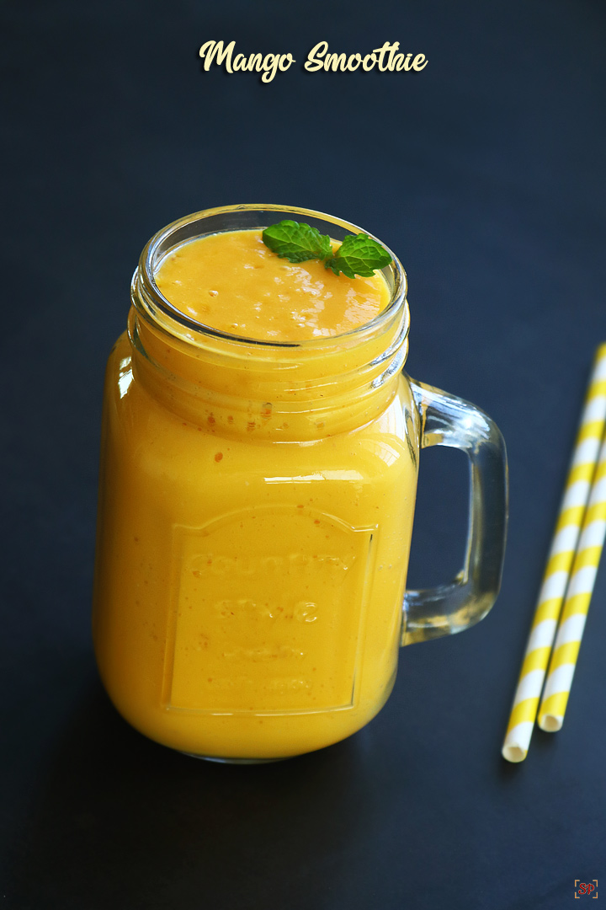

Smoothie

Mango Smoothie
Mango Smoothie is a healthy and creamy drink that you can have for breakfast. It is so filling that you
Ingredients
- 1 and 1/2 cups mango chopped roughly
- 1 and 1/2 cups milk boiled and cooled
- 1/2 cup yogurt
- 2 tbsp honey
- 2 nos almonds
Step by step to a make a Mango Smoothie
- To a clean dry mixer jar add 1 and 1/2 cups chopped mangoes. I used alphonso variety.
- Add 1 and 1/2 cups fresh milk, boiled and cooled.
- Add 1/2 cup thick curd.
- Add 2 tbsp honey. Increase to 3 tbsp if your mangoes are not that sweet.
- Add 2 nos almonds. You can soak in hot water and add to get it blended easily.
- Now all ready to blend.
- Blend until thick and creamy. Adjust consistency according to your liking. Thin it with water if you prefer slightly runny smoothie.
- Smoothies are slightly thick so adjust consistency according to your liking.
- Pour into serving glass.
- Garnish with a small sprig of mint leaves. Enjoy!
- Enjoy Mango Smoothie fresh!